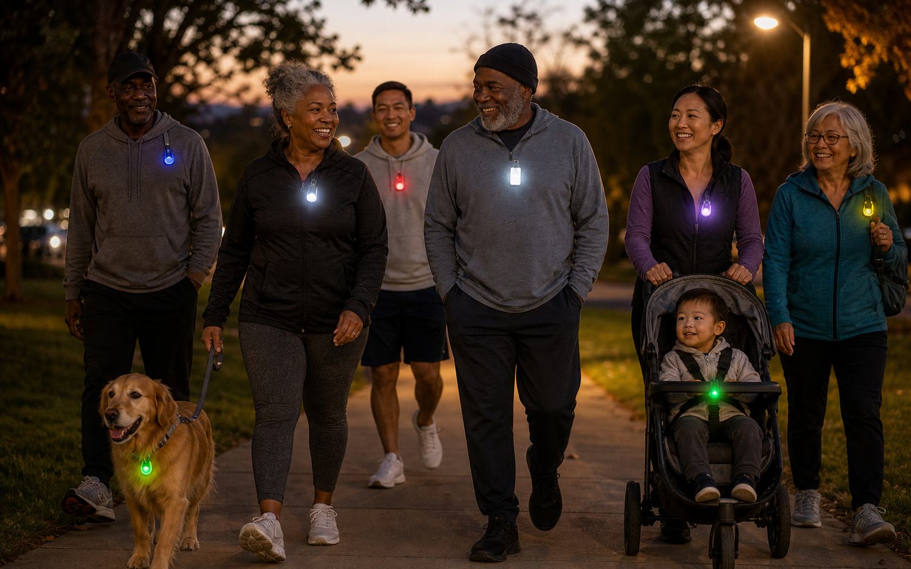
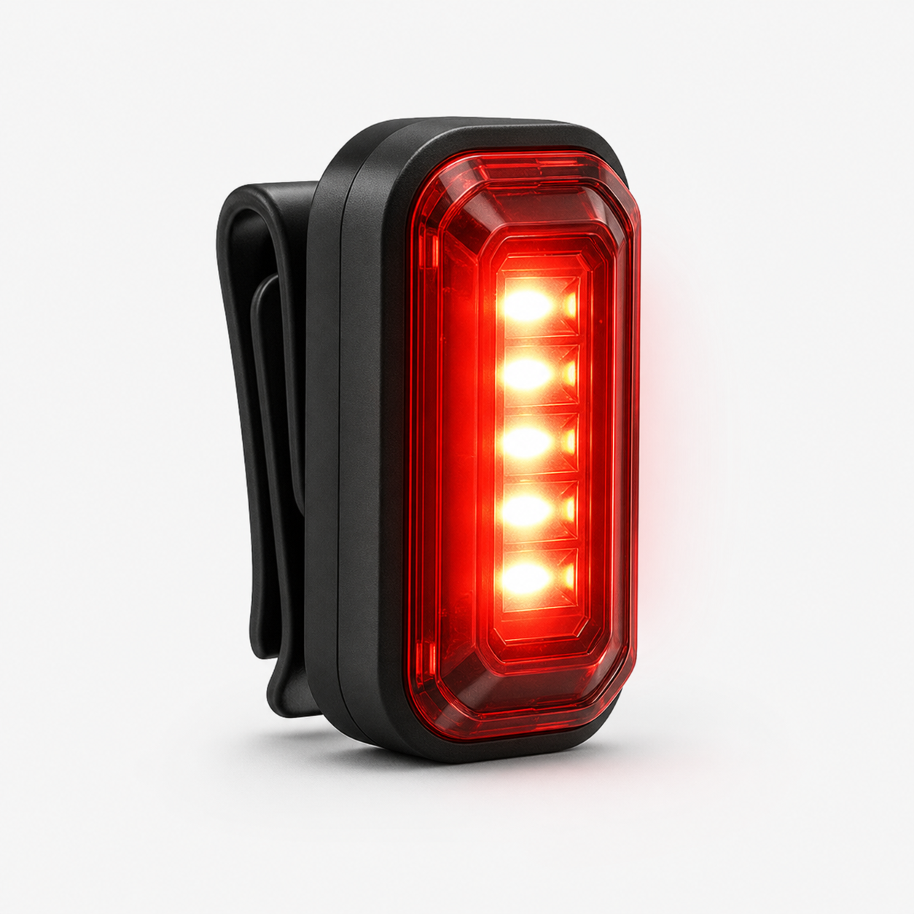

For walkers, runners, cyclists and dog owners

Most pedestrian deaths in the U.S. happen after dark. Federal crash data consistently shows that roughly three out of four occur in low light. The simplest fix is making sure drivers can see you sooner, and a small clip-on LED light is one of the easiest ways to do that.
Reflective strips only shine when headlights hit them straight on. A clip-on LED makes its own light, so it shows up from the side, around corners, in parking lots and on streets where headlights aren't pointed at you yet. A flashing light also adds motion, which catches a driver's eye faster than something steady.

Clip-on safety lights for walking, running, cycling and pets. Check the listing for current colors, modes and battery details.
Check price on AmazonMore guides: night walking safety, safety gear for early runs, dog walking after dark, clip lights for cyclists.
Yes. Unlike reflective gear, which only shines when headlights point directly at it, an LED light produces its own light and is visible from the side and at a distance. Flashing mode adds motion that catches attention.
A waistband or running belt keeps the light centered and moving with you. Adding one on a shoe or ankle creates extra motion that drivers notice.
Yes. Clip it to the collar or harness so the dog is visible, and wear one yourself so drivers see both of you.